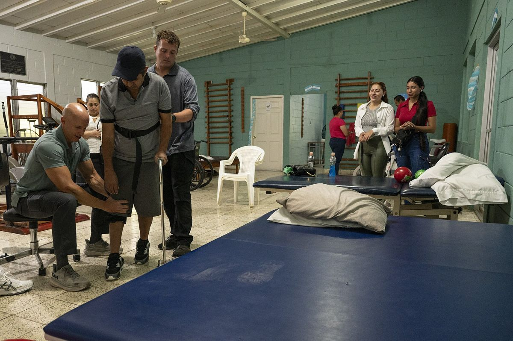
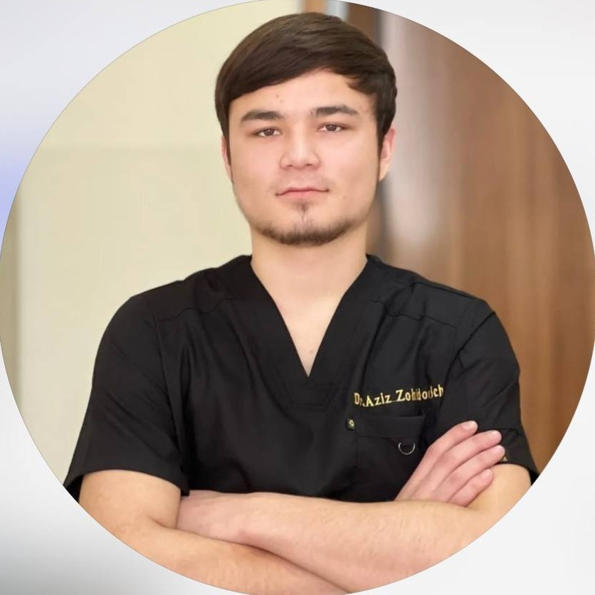
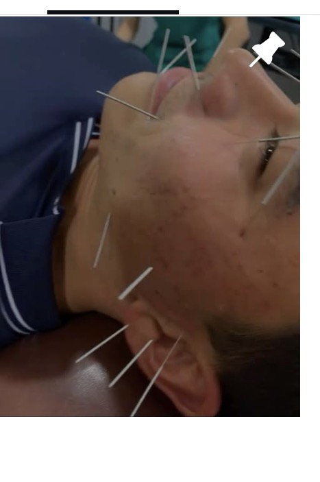
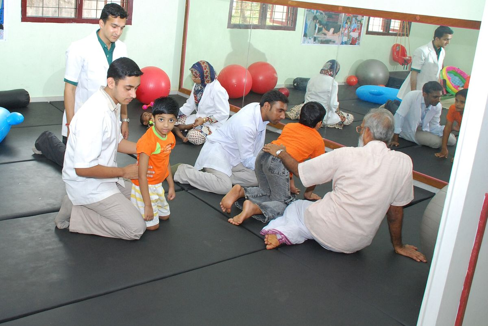

Asosiy yo'nalish
Insultdan keyingi reabilitatsiya
Harakat, muvozanat, yurish va kundalik ko'nikmalarni bosqichma-bosqich tiklash.
Reabilitolog, fizioterapevt va iglaterapevt Azizbek Norjigitov. Insultdan keyingi tiklanish, kattalar va bolalar reabilitatsiyasi, har bir bemor uchun shaxsiy reja bilan.

Usullar har bir bemor uchun alohida tanlanadi. Ko'pincha ular birgalikda eng yaxshi natija beradi.

Harakat, muvozanat, yurish va kundalik ko'nikmalarni bosqichma-bosqich tiklash.

Og'riq va nevrologik holatlarda, insultdan keyingi tiklanishda qo'shimcha usul.
Og'riqni kamaytirish, mushak va bo'g'imlar funksiyasini tiklash.
Umurtqa va bo'g'imlar bilan qo'l texnikasi orqali ishlash.
An'anaviy usul. Faqat ko'rik va qarshi ko'rsatmalar baholangandan keyin.

Bolalar uchun yumshoq, o'yin shaklidagi mashqlar. Kattalar uchun funksional tiklanish.
Dastlabki oylar miya o'zini qayta tashkil etishi (neyroplastiklik) uchun eng faol davr. Reabilitatsiyani imkon qadar erta, mutaxassis nazoratida boshlash tavsiya etiladi.
Sharhlar akupunktura standart reabilitatsiyaga qo'shimcha sifatida qo'l funksiyasi, yutish buzilishi va og'riqda foyda berishi mumkinligini ko'rsatadi, ammo ko'p ishlarning sifati o'rtacha. Asosiy davo fizioterapiya va faol mashqlar bo'lib qoladi.
Frontiers in Neurology, 2025 · GRADE sharhiNevrolog xulosasi, harakat doirasi, mushak kuchi, muvozanat va kundalik imkoniyatlar ko'rib chiqiladi.
Erta, yumshoq mashqlar, to'g'ri joylashtirish, mushak tonusi va og'riq bilan ishlash.
Qo'l va barmoq harakati, o'tirish, turish, yurish va muvozanat ko'nikmalari.
Uyda bajariladigan mashqlar, yaqinlar uchun yo'riqnoma va natijani kuzatish.
Qo'ng'iroq qiling yoki Telegram orqali yozing. Holatingizni qisqacha ayting.
Harakat, kuch, og'riq va mavjud tibbiy hujjatlar baholanadi.
Maqsadlar va usullar (fizioterapiya, igna, manual, xijoma) belgilanadi.
Mashg'ulotlar, natijani kuzatish va uyda bajariladigan mashqlar.
Reabilitolog, fizioterapevt va iglaterapevt. 4 yillik amaliy tajriba. Asosiy yo'nalishi insultdan keyingi reabilitatsiya, shuningdek kattalar va bolalar uchun tiklanish dasturlari.
Davolashda bir nechta usulni birlashtiradi: fizioterapiya, xijoma, manual terapiya va akupunktura. Har bir bemorga alohida moslab.
Imkon qadar erta, shifokor holat barqaror deb hisoblagach. Muddatni nevrolog va reabilitolog birgalikda belgilaydi.
Mavjud xulosalar, MRT/KT natijalari, tahlillar va qabul qilayotgan dorilar ro'yxati. Bo'lmasa ham, ko'rikdan boshlash mumkin.
Ha, bolalar reabilitatsiyasi yoshga mos, yumshoq usullar bilan olib boriladi.
To'g'ri ko'rsatma va steril jihozlar bilan o'tkazilganda odatda xavfsiz. Qon ketish bilan bog'liq kasalliklar, homiladorlik va boshqa holatlarda avval baholash o'tkaziladi.
Bu tashxis, holat og'irligi va maqsadga bog'liq. Ko'rikdan so'ng taxminiy reja aytiladi.
Savolingiz bormi? Qo'ng'iroq qiling yoki yozing, qabul vaqtini kelishib olamiz.